초록
Foundation4D는 멀티 카메라 주행 영상에서 geometry 추정, 3D detection, semantic occupancy, Gaussian reconstruction을 한 번에 수행하는 통합 feed-forward 모델입니다. 공유 backbone은 factorized spatiotemporal attention으로 카메라·시간에 걸친 관측을 효율적으로 결합하고, 비디오 추론 파이프라인은 pose graph optimization으로 궤적을 보정하며 윈도우를 가로질러 객체 트랙을 잇습니다. 저자들은 1,253개 클립에 dense depth·occupancy 라벨을 붙인 PAI‑Foundation4D 벤치마크를 공개합니다.
벤치마크별 fine-tuning 시 Waymo·nuScenes depth AbsRel 최저, nuScenes detection mAP 최고, OpenOccupancy occupancy mIoU 최고 (비교 대상 중). 예측한 geometry·궤적은 LiDAR 없는 NuRec의 prior로 사용됩니다.
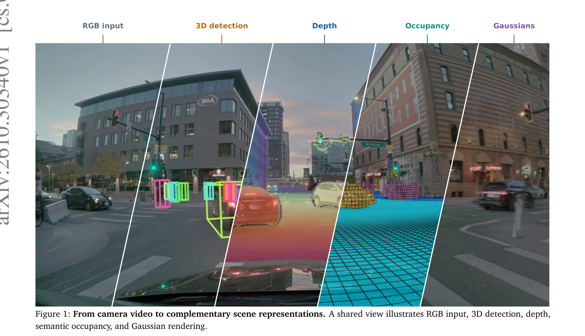
1. 서론
자율주행 개발의 두 핵심 목표는 주행 환경 이해와 녹화 장면의 시뮬레이션용 재구성입니다. 둘 다 장면의 기하·객체·움직임·점유 공간 복원이 필요합니다. VGGT 같은 feed-forward 재구성이 토대가 되지만, VGGT의 global attention은 전체 토큰 수의 제곱으로 비용이 늘어 긴 멀티 카메라 비디오에 비쌉니다.
Attention 비용 비교 (개념도)
카메라 C=6, 이미지당 37×37 토큰 기준. 시점 수 T를 바꿔 보세요. 쌍(pair) 수 기준 상대 비용이며, 논문 측정값이 아닌 개념적 계산입니다.
T = 44가지 기여
- 멀티 카메라 비디오 특징을 geometry·semantics·objects·occupancy·Gaussian decoder가 공유하는 feed-forward 모델
- 윈도우 수준 기하를 정렬하고 객체 궤적을 조립하는 비디오 수준 추론 파이프라인
- 센서 타이밍·자차/객체 움직임·가시성을 고려한 depth·occupancy 주석 파이프라인
- 공통 장면에서 geometry·detection·occupancy를 비교하는 PAI‑Foundation4D 벤치마크
3. Foundation4D 모델
C대 카메라 × T개 시점 비디오가 주어지면 camera z-depth·pointmap·ego motion·3D 박스·semantic occupancy·3D Gaussian을 추정합니다. 각 이미지는 자기 촬영 시각을 가져 비동기 입력도 다룹니다.
인터랙티브 아키텍처 (모듈 hover/클릭)
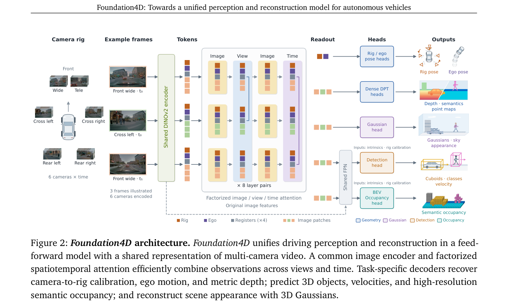
Factorized spatiotemporal attention
각 레이어는 이미지 내부 attention 다음에 같은 시점의 카메라 간(view) 또는 같은 카메라의 시간축(time) attention을 번갈아 적용합니다. 아래 격자에서 토큰을 클릭하면 각 모드에서 어떤 이미지들과 attention하는지 보입니다.
DINOv2 ViT‑L/14 · 특징 폭 1024 · 1036×1036 이미지 → 74×74 패치 → 37×37로 bilinear 다운샘플(공간 토큰 1/4) · 16개 aggregation 레이어 · 마지막 이미지 블록과 시간 블록 출력을 이어 붙여 폭 2d 문맥 토큰.
3.4 Geometry decoder
카메라 포즈 = 촬영 시각 τt,c에서 보간한 ego 궤적 × 카메라 c의 고정 rig 변환. translation은 선형, 회전은 최단호 slerp 보간. (요약 표기, 원식은 아래 캡처)
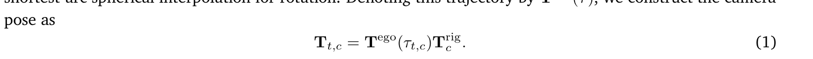
픽셀 u의 z‑depth d를 ray 단위벡터 r의 z성분으로 나눠 ray 거리로 바꾼 뒤 역투영. DPT decoder 출력 격자 518×518, semantic 21개 클래스.
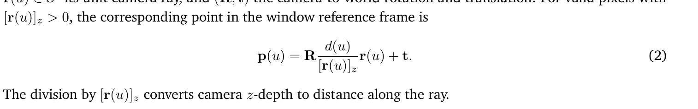
식 3 — geometry 손실 가중치 (depth, pointmap, rig, ego, 상대움직임, semantic):
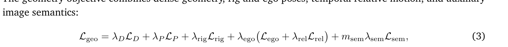
길이는 40m 기준으로 정규화 · β=0.2 · 상위 2% trimming · 상대 포즈는 5프레임 미만 쌍.
3.5 검출 · 3.6 Occupancy 범위
아래 3D 장면에서 두 영역을 직접 비교해 보세요 (rig 좌표계).
| 전후 x | 좌우 y | 높이 z | 비고 | |
|---|---|---|---|---|
| Detection | −108 ~ 150 m | −108 ~ 108 m | −3 ~ 5 m | query 900 · decoder 6층 · 폭 256 · 12 클래스 |
| Occupancy | −20 ~ 100 m | −30 ~ 30 m | −3 ~ 5 m | 0.2 m voxel · BEV 기둥당 reference point 4개 |
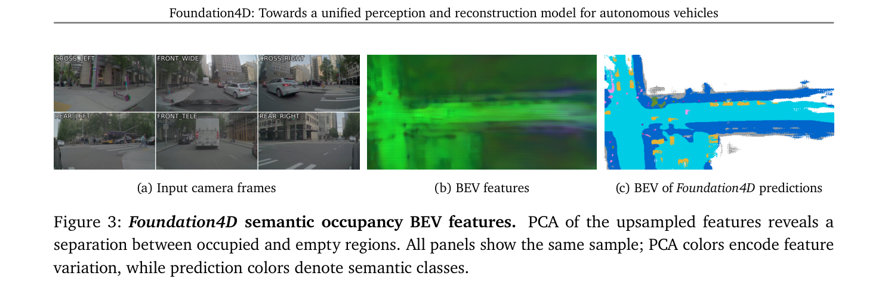
3.7 Gaussian 재구성
Instant NuRec을 따라 정적 Gaussian + actor Gaussian + 하늘 cubemap. 픽셀마다 중심·RGB·스케일·quaternion·opacity를 가진 Gaussian 1개. 추론 때는 예측 포즈와 자체 검출로 만든 트랙을 사용합니다.
splatting 누적 색 + 남은 투과율 × 하늘 색 → 카메라별 affine(3×3 M, bias b) → [0,1] clip. (요약 표기)
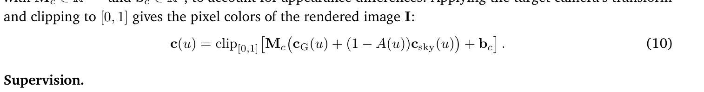
위: 정적 Gaussian(회색 계열)과 궤적을 따라 강체 이동하는 actor Gaussian(주황)의 개념 시각화.
4. 통합 모델 학습
표 1. 내부 학습 데이터 구성 (막대에 hover)
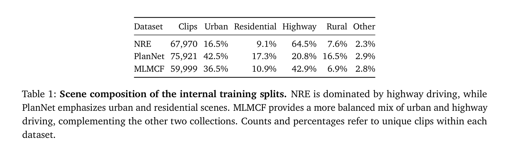
3단계 학습 타임라인
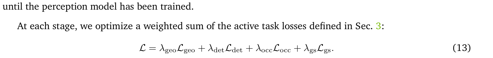
Gaussian 결합 fine-tuning 가중치: geometry 1 · detection 0.1 · occupancy 0.2 · Gaussian 4. H100 64장, 업데이트당 4시점 ~3.8 s / 8시점 ~8.3 s.
5. 멀티 카메라 비디오 추론
모델 시간 문맥보다 긴 비디오는 겹치는 윈도우로 처리해 공통 좌표계로 조립합니다. 네트워크 파라미터는 건드리지 않습니다.
개념 시뮬레이션: 순차 정렬은 오차가 누적되고 나중 윈도우가 이전 포즈를 고치지 못함 → PGO는 모든 윈도우의 상대 포즈 factor(간격 1,2,4,8)로 궤적 전체를 동시에 최적화. 실제 수치가 아닌 설명용 애니메이션입니다.
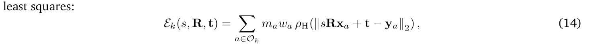
식 14: Sim3 (s,R,t) 정렬 — Huber 페널티, 하늘 마스크 m, depth confidence 기하평균 w, IRLS로 최소화.
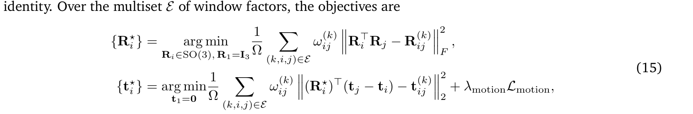
식 15: 회전 먼저(첫 포즈 고정, Frobenius 차이) → translation 선형 최소자승 + motion prior(계수 30). 가중치는 윈도우 시작 1 → 끝 0.1 선형 감소. 외부 포즈·loop closure 없음.
5.3 Offline 다중 객체 추적
6. Physical AI Autonomous Vehicles Foundation4D
PAI 데이터셋(멀티 카메라 RGB·LiDAR·레이더·보정·ego 궤적·자동 3D cuboid 트랙)에 LiDAR 기반 depth 맵과 voxel별 semantic·속도 라벨 occupancy를 더했습니다. 평가는 1,253개 테스트 클립, 카메라 6대.
주석 파이프라인 (단계 클릭)
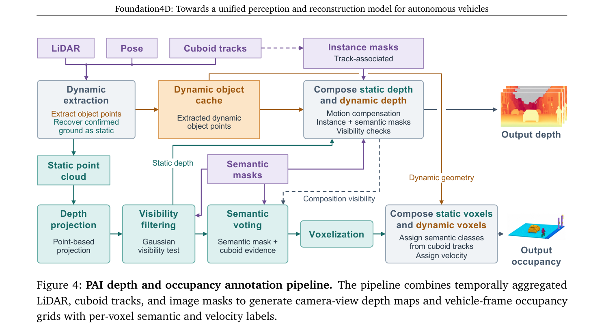
LiDAR 누적: 정적 vs 동적 (3D)
정적 점은 클립 전체 누적, 동적 점은 최대 10개 스캔 지역 윈도우에서 모아 목표 시각 actor 포즈로 warp (개념 시각화).
| Occupancy 주석 grid | 값 |
|---|---|
| voxel | 0.1 m 정육면체 |
| x | −150 ~ 150 m |
| y | −100 ~ 100 m |
| z | −3 ~ 5 m |
| 속도 | 모든 점유 voxel에 m/s 3D 속도 (정적 0, 동적은 트랙 속도) |
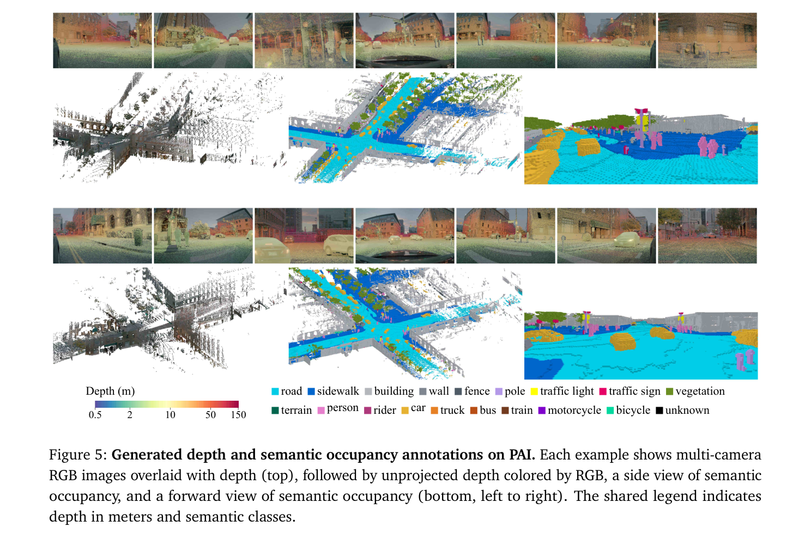